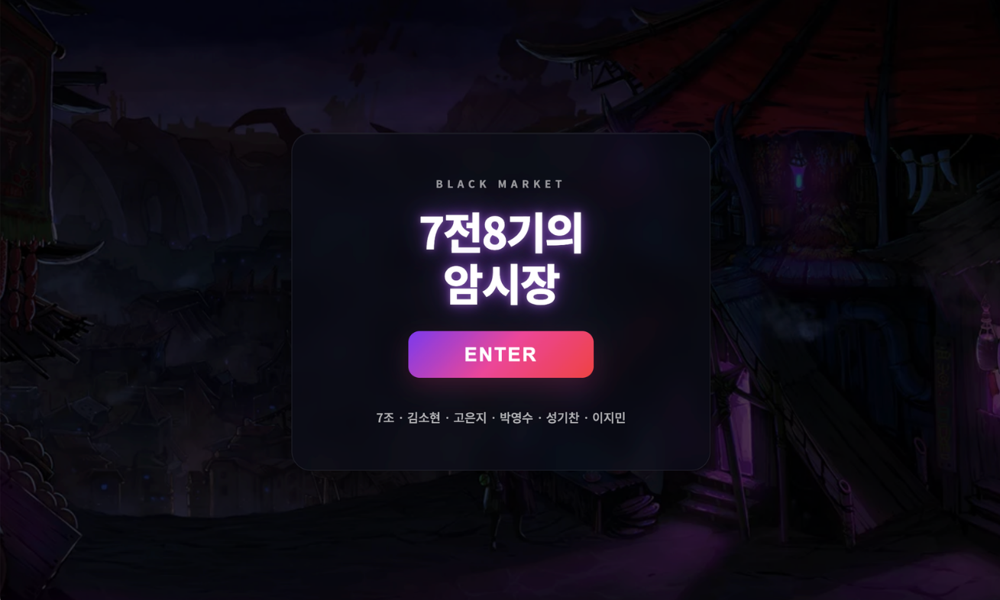
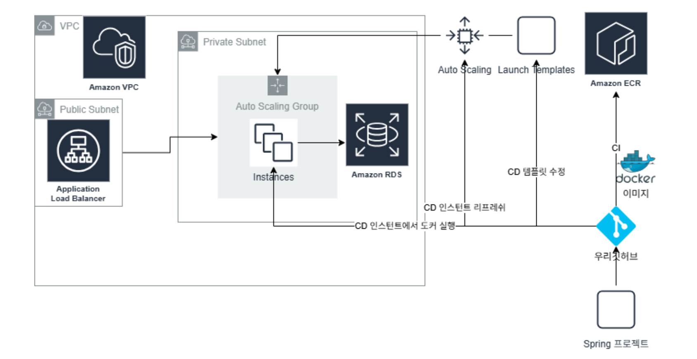

PortOne 기반 결제·구독 서비스

5인 팀으로 진행한 결제 및 구독 서비스 백엔드 프로젝트입니다. PortOne API를 활용하여 실제 결제 시스템의 흐름을 파악하고, 결제 과정에서 발생할 수 있는 데이터 불일치 및 동시성 문제를 예방하며 결제 위변조, 중복 처리, 재고 불일치 문제를 사전에 방지할 수 있는 안정적인 결제 시스템 구현을 목표로 했습니다.
Java / Spring Boot MySQL / JPA PortOne 결제 API Pessimistic Lock Compensating Transaction

클라이언트 측 결제 결과 요청이나 PG사 웹훅 호출을 무검증 신뢰할 경우 결제 금액 조작이나 이중 결제 승인 위험이 컸습니다. 특히 네트워크 재시도로 인해 1ms 미만 극소 시간 차로 수신되는 중복 웹훅 호출 시, 단순 데이터 존재 확인(Check-Then-Act) 흐름만으로는 경쟁 상태(Race Condition)를 피해가지 못해 중복 결제 처리가 일어날 리스크가 있었습니다.
결제 보안을 최우선으로 하여 PortOne 단건 조회 API를 통한 **서버 측 2차 대조 검증**을 필수로 채택했습니다. 또한, 웹훅 동시 인입 상황에서 분산 락 라이브러리 도입을 지양하고 DB 자원 내에서 무결성을 보장하고자 **`webhook_id` 테이블 컬럼에 DB 유니크 제약조건(Unique Constraint)**을 부여해 멱등성(Idempotency)을 지키기로 결정했습니다.
금액 조작 및 우회 결제 시도를 100% 원천 차단했습니다. 격렬한 다중 웹훅 중복 요청 하에서도 이중 결제 처리율 0건을 완벽히 달성하며 무결성 높은 결제 처리 체계를 완성했습니다.
다양한 상품을 함께 주문하는 이커머스 결제 단계에서 동시 재고 조작이 일어날 시 초과 판매와 데이터 불일치가 야기될 수 있습니다. DB 레벨의 즉각 통제를 위해 비관적 락을 채택했으나, 여러 트랜잭션이 서로 다른 순서로 잠금(Lock)을 획득하는 과정에서 상호 대기 상태에 빠지는 **순환 데드락(Deadlock)** 발생 위험이 두드러졌습니다.
성능 낭비가 심한 DB 락 타임아웃 증설 대신, 애플리케이션 서비스 계층에서 잠금을 획득하는 대상들의 접근 순서를 일원화하기로 결정했습니다. 이에 따라 다중 락 획득 대상인 **상품 ID 리스트를 오름차순 정렬(Sorting)한 뒤 순차 잠금을 요청하는 잠금 획득 정렬 전략**을 채택했습니다.
ProductRepository 조회 시 @Lock(LockModeType.PESSIMISTIC_WRITE) 적용동시 다발적인 복수 품목 구매 테스트 환경 하에서 DB 교착 상태(Deadlock) 발생 0건 및 초과 판매 0건을 수립하며 극도의 동시성 제어 안정성을 입증했습니다.
환불 요청 시 'PG 취소 - 포인트 회수 - 포인트 복구 - 재고 복구'의 4단계가 순차적으로 수행되어야 합니다. 이 중 일부 단계에서 예외가 발생할 경우, 결제 상태와 실제 데이터(재고/포인트) 간의 치명적인 불일치가 발생할 수 있었습니다.
전체 환불 프로세스를 하나의 비즈니스 트랜잭션 단위로 묶고, 중간 단계 실패 시 안전하게 상태를 되돌릴 수 있는 보상 트랜잭션(Compensating Transaction) 구조를 설계하여 정합성 위반 요소를 사전 차단했습니다.
실운영 시나리오 테스트 결과, 환불 시 PG·포인트·재고 데이터 불일치가 단 1건도 발생하지 않았습니다. 번거로운 수동 데이터 보정 작업 필요성을 완전히 제거하여 운영 효율을 크게 높였습니다.